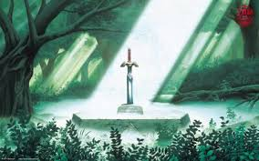
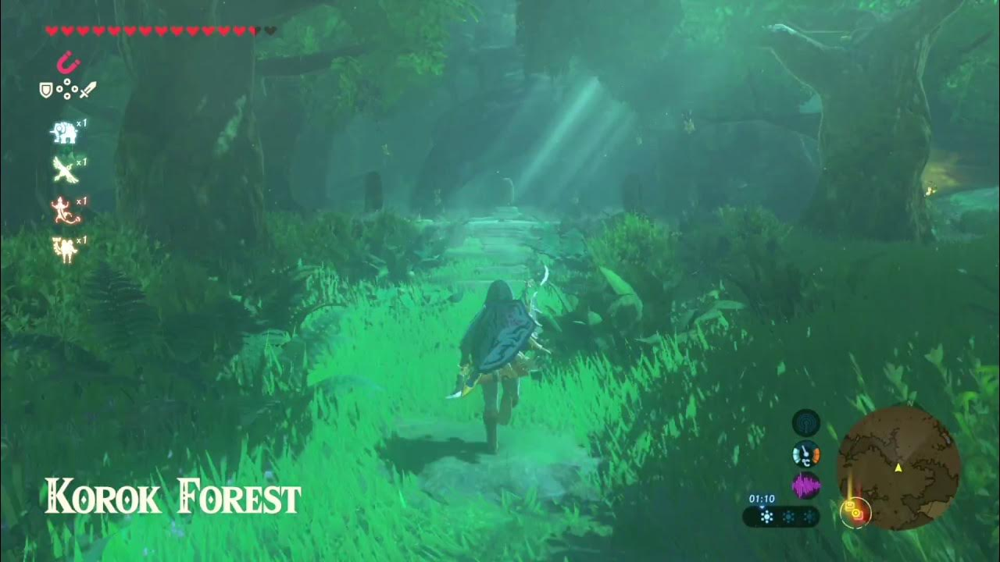

Adventures Across Generations
The Legend of Zelda series has been around since the 1980s and has appeared on many different Nintendo systems. Each game changes the look of Hyrule while keeping the same core ideas: exploration, puzzles, and saving the kingdom.
Classic Titles
- The Legend of Zelda – the original top down adventure on the NES.
- A Link to the Past – introduced the idea of light and dark worlds.
- Ocarina of Time – brought the series into 3D and is still a fan favorite.
- Majora’s Mask – a darker story with a three day time loop.

These early games helped set the main Zelda formula: explore dungeons, collect items, defeat bosses, and unlock new areas of the map.
Modern Open World Games

Breath of the Wild changed the series by giving players a giant open world that they can climb, glide, and explore in any order. Shrines replaced traditional dungeons, and physics based puzzles allow creative solutions.

Tears of the Kingdom adds sky islands, underground caverns, and new abilities that let Link build vehicles and devices. It feels like a direct sequel that builds on everything the previous game started.